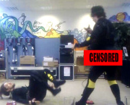
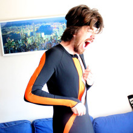
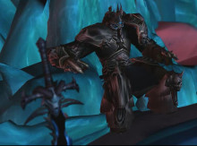

7 Terrible Truths About Motion Capture Suits - Part 1
Life in a motion capture suit looks pretty darn glamorous, I know. All that high technology, the form-flattering suits and shiny lights, the pure acting with no makeup or props required.
All of that’s true - except for the “glamorous” bit.
Here are some of the horrible truths I’ve realised about the fabled motion capture suit, over my last 4 years of working with them…
EPIC BUTT CRACK
Form-fitting lycra suits only make you look good if you looked absolutely bloody stunning to begin with. For regular people, the results are … different.
Unfortunately, if you’re the one wearing the suit, you often don’t get to see the results until later.
A couple of years ago, I was down in Brighton testing out Animazoo’s IGS inertial mocap suits - the same ones used by Rockstar North and Ubisoft. As I tend to, I jumped into one of the suits to try it out myself - and had one of my assistants do some video recording, because I figured it’d make a good “extra” for the Strange Company website.
YOU ARE NEVER SEEING THAT VIDEO.
On super-svelte athletes, Animazoo’s two-part, skin-tight lycra suit looks pretty darn good. On a somewhat unfit director who had spent more of the last year eating delicious pies than getting to his kickboxing classes, however, things didn’t go so well. Specifically, they didn’t go so well around the lower back region, where some vigorous motion capture combined with the tight, sweaty suit resulted in the most epic arse-crack the world has ever seen.
I, of course, was unaware of this, and so cheerfully paraded around flailing my arms, unaware of the reason for the horrified expressions and covered eyes until much, much later.
The motion capture turned out great. But the “behind the scenes” video? It wasn’t just the scene that it was, unfortunately, behind.
Other People’s Sweat
So here’s the thing. Motion capture suits are skintight. Very, very skintight.
They’re also reasonably durable, because they cost a fortune and so producers like me get a little pissed if they tear easily. This means moderately thick fabric. And they’re all-encompassing, because there’s no point only capturing half the body’s motion.
So, they’re minimally breathable, quite thick, and cover absolutely everything. And the activities of motion capture are usually pretty dramatic - in the last three months, we’ve captured Minecraft zombies wrestling, Death Knights fighting and flirting (yes, at the same time), full-on Thai boxing, and simlar things.
“Sweaty” doesn’t begin to cover it.
All of which is fine, of course, because film production schedules are always relaxed, and there’s plenty of time at the end of each day to perform the complex disassembly task necessary to get the sensors out of the suit and subsequently wash the thing. Mmm-hmm.
So when you’re putting the suit back on the following morning - or worse, someone else’s suit from the previous day - “glamorous” is not the word you’d usually use. “Dank” might be more appropriate.
Bonus round: Our optical motion capture suits are even worse: they’re not just form-fitting, heavy and all-encompassing, they also need to have markers easily attached to them. How do the makers of the suit achieve this? By covering them in thick, wool-like velcro. Toasty.
Cables, Cables Everywhere
Motion capture’s a freeing experience for an actor, right? No makeup. No waiting for lights. No costumes. Just pure, unadulterated acting…
Surrounded by thousands or tens of thousands of pounds’ worth of expensive, breakable technology.
Now, if you’re working for James Cameron, I’m sure that this last point isn’t a problem - they have huge volumes and dozens of minions running around with gaffa tape attaching wires to solid immovable things. However, if you’re acting with an innovative indie company that’s trying to compete with Hollywood on a budget orders of magnitude less, things are rather different.
A couple of years ago, we were completing the motion capture for the latest draft of Death Knight Love Story. And I’d somehow managed to fast-talk a self-storage company into renting us the top storey of their warehouse for something they tenuously understood to be “like Gollum in Lord Of The Rings”.
Generally, when we were using that warehouse for motion capture, we had about 8 hours to get in, set up the entire Optitrack motion capture system we were using at the time, and get shooting. Our cable discipline tended to be a little … minimal.
It looked like a bunch of hyperactive squirrels had gone mad in Amazon’s camera-and-cables warehouse.
Ross, one of our actors, was performing the body motion for Brian Blessed’s last scene in Death Knight Love Story, and he was well and truly into the part. He slowly rose from the Frozen Throne (represented by a crappy stool we’d purchased from B&Q). He became aware of what had happened to him (I won’t spoiler), and he screamed in rage. And then, with the last of his breath, he hurled his sword - an actual, solid sword prop - away from him in his despair.
As previously mentioned, Ross was surrounded by a nest of expensive cameras and inadequately secured wiring.
Ross came out of the moment at about the same time I did - in time to see his sword prop smash into a tripod and tangle with a bunch of delicate, highly sensitive wires connected to one of our cameras. There was a creak. There was a skittering sound. And there was the despairing scream of a director attempting to break the land-speed record in order to get to the falling tripod before it caused a domino effect and brought the entire mocap system down from an average height of 10’ around our ears.
I didn’t quite make it.
Ross stopped apologising around 24 hours later.
We still used the footage, though.
Part 2 next week!